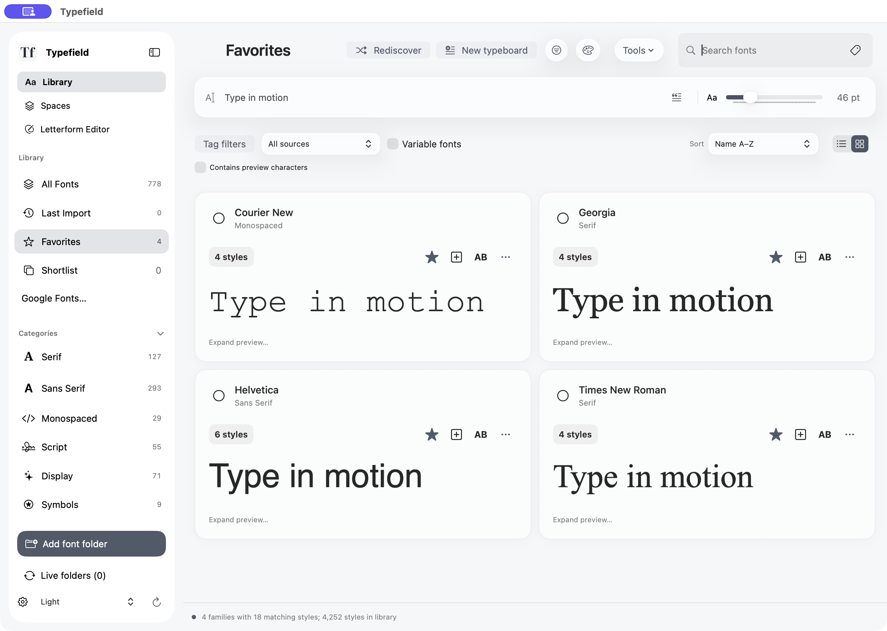
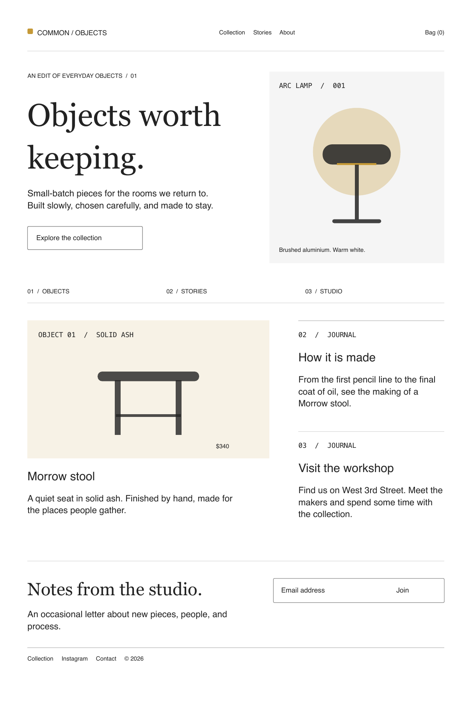

A collection
with character.
Keep your favorites close, group fonts into collections, and compare the details that make a difference.
Organize your fonts.
Try them in context.
Make your own.
Typefield brings your fonts, your ideas, and your own letterforms into one native Mac app. Less looking around. More making things.
See fonts side by side with your own preview text. Search by family, style, or tag, then keep the ones you want in favorites, shortlists, and collections.

Keep your favorites close, group fonts into collections, and compare the details that make a difference.
Try a pairing in an actual layout. Explore typeboards in Spaces, then take your direction into the next part of your process.
Start with a Spaces typeboard. Export a vector PDF for review, editable files for design, or typography tokens for development.
Export from Spaces, then run the local importer to make editable frames, text, and shapes.
Run the included builder scripts to recreate typeboards as editable Adobe documents.
Share a vector PDF, or hand developers typography tokens with font names, sizes, and spacing.
This page was made from the included Website canvas in Spaces. See the whole layout, or download its vector PDF.

Open complete layoutA native app that fits your workflow, with your font library and creative work close at hand.
Your library and projects live locally. No Typefield account required to use the app.
Take out typeboards, developer tokens, and your own letterforms. Good ideas deserve to go places.
A native Mac app for working with type. Library helps you organize and compare fonts. Spaces gives you a place to explore typography in context. Letterform Editor lets you draw, import, and edit your own letterforms.
Invited testers can get the private Mac beta from the download page. It includes system requirements and first-launch instructions.
Yes. Typefield is built around your own font library. You can preview, organize, compare, and activate fonts. Your font licenses still apply to any work you make or share.
The Letterform Editor supports drawing and artwork import, editable outlines, spacing, and static TrueType export. Start with original artwork and refine it into something you can type with.
Yes. Spaces can export layouts for Figma through a local importer, and builder scripts for Illustrator and InDesign. You can also export PDFs and developer tokens. These are file-based handoffs you run yourself, not live sync.